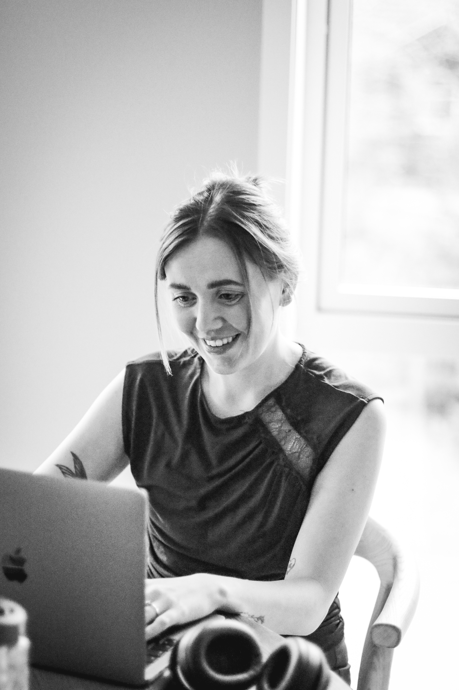
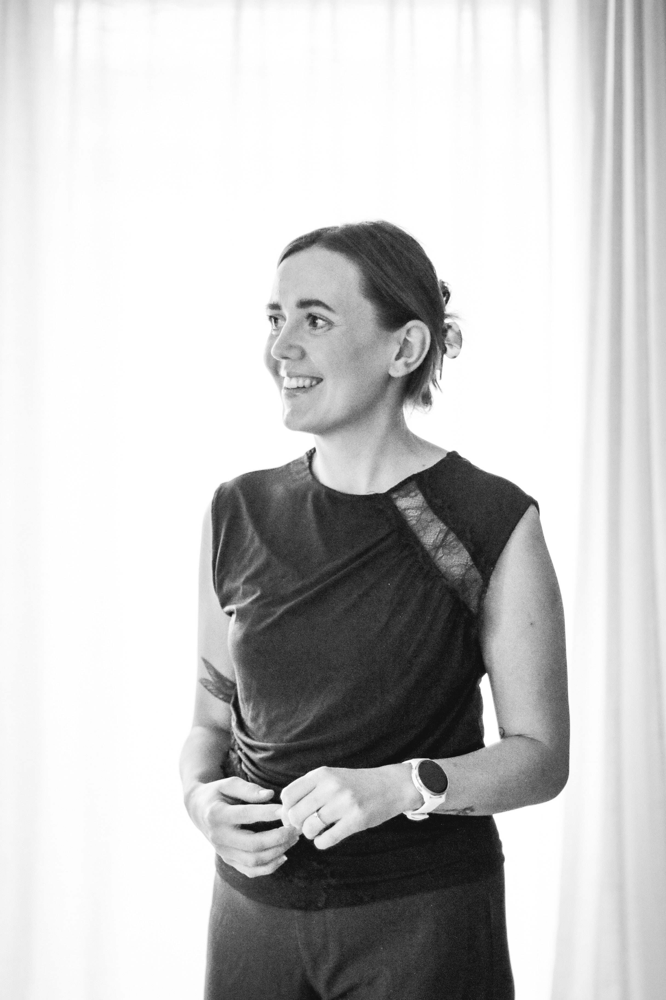

About
Creative at heart. Restless in spirit. Grounded in depth.
I’m Sofie — a graphic designer with a background in PR and social influence.
My work sits at the intersection of communication and aesthetics — where concept, clarity and detail come together.
With formal training in graphic design and experience in understanding how messages shape perception, I approach design as a tool for connection, not decoration.
I’m particularly drawn to branding and editorial projects where visual storytelling and structure play a central role.

Education
BA in PR & Social Influence — Kristiania University College
Advanced Diploma in Graphic Design — Noroff

I’m driven by curiosity and a need to understand — not just how something looks, but how it feels and why it resonates.
My process is both intuitive and intentional. I explore widely, then refine carefully — always searching for clarity in expression.
Whether working on identity, layout or concept, I aim to create work that feels honest, considered and quietly confident.